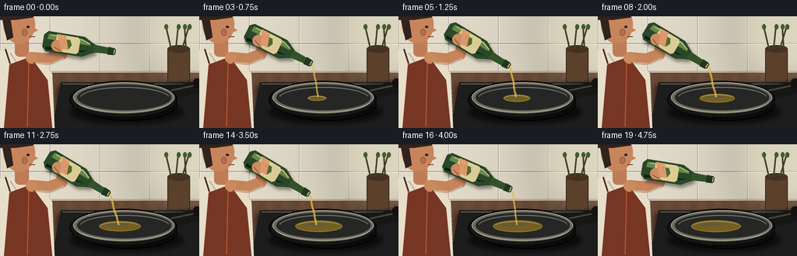
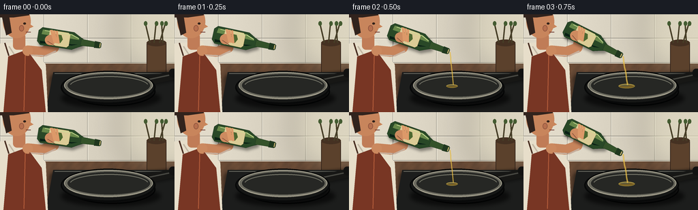

CODING AGENTS AS PIXEL WORLD MODELS
traex/GPT-5.6-Sol · motion_rationality_0013
点击播放 · 原生 RGB 像素
逐轮保存的候选
回放视频、检查图与代码变化。
每份候选均可单独播放。实际图片检查记录在下方工具轨迹中。
候选 01播放与检查图
点击播放 · 原生 RGB 像素


展开代码变化
--- 上一保存版本
+++ 本次保存版本
@@ -0,0 +1,234 @@
+from pathlib import Path
+import json, math
+import numpy as np
+from PIL import Image, ImageDraw, ImageFilter
+import artifact_io
+
+CASE_DIR = Path(__file__).resolve().parent
+SPEC = json.loads((CASE_DIR / "task_spec.json").read_text())
+W, H, N = SPEC["width"], SPEC["height"], SPEC["frames"]
+S = 4
+rng = np.random.default_rng(23)
+
+
+def sc(v):
+ if isinstance(v, (tuple, list)):
+ return tuple(int(round(x*S)) for x in v)
+ return int(round(v*S))
+
+def smooth(x):
+ x = max(0.0, min(1.0, x))
+ return x*x*(3-2*x)
+
+def transform(pt, center, ang):
+ x,y=pt; c=math.cos(ang); s=math.sin(ang)
+ return (center[0]+x*c-y*s, center[1]+x*s+y*c)
+
+def tpoly(points, center, ang):
+ return [sc(transform(p,center,ang)) for p in points]
+
+def add_blur(base, layer, radius):
+ layer = layer.filter(ImageFilter.GaussianBlur(sc(radius)))
+ return Image.alpha_composite(base, layer)
+
+def draw_background():
+ yy, xx = np.mgrid[0:H*S,0:W*S]
+ # Warm tiled wall transitioning to a walnut worktop.
+ arr=np.empty((H*S,W*S,3),dtype=np.float32)
+ wall=np.array([211,204,187],dtype=float)
+ light=13*(1-xx/(W*S))+5*np.sin(xx/160)
+ arr[:,:,:]=wall+light[...,None]
+ counter = yy >= sc(72)
+ grain = 4*np.sin(xx/13.5)+2*np.sin((xx+yy)/7.3)
+ arr[counter,0]=104+grain[counter]-(yy[counter]-sc(72))*0.035
+ arr[counter,1]=74+grain[counter]*.6-(yy[counter]-sc(72))*0.018
+ arr[counter,2]=53+grain[counter]*.35
+ noise=rng.normal(0,1.15,arr.shape[:2])[...,None]
+ arr += noise
+ arr=np.clip(arr,0,255).astype(np.uint8)
+ im=Image.fromarray(arr,"RGB").convert("RGBA")
+ d=ImageDraw.Draw(im,"RGBA")
+ # Tile grout and subtle bevels.
+ for x in [0,64,128,192,256]:
+ d.line((sc(x),0,sc(x),sc(72)),fill=(143,139,128,75),width=sc(.6))
+ d.line((sc(x+1),0,sc(x+1),sc(72)),fill=(245,242,228,65),width=sc(.5))
+ for y in [35,71]:
+ d.line((0,sc(y),sc(256),sc(y)),fill=(137,132,121,80),width=sc(.8))
+ d.line((0,sc(y+1),sc(256),sc(y+1)),fill=(249,246,232,60),width=sc(.5))
+ # Soft window glow at upper right.
+ glow=Image.new("RGBA",im.size,(0,0,0,0)); gd=ImageDraw.Draw(glow,"RGBA")
+ gd.ellipse(sc((173,-38,286,89)),fill=(255,248,210,50))
+ im=add_blur(im,glow,16)
+ # Rear counter items: wooden utensil crock and blurred herb sprigs.
+ d=ImageDraw.Draw(im,"RGBA")
+ d.rounded_rectangle(sc((215,40,244,89)),radius=sc(4),fill=(91,65,44,150),outline=(53,37,27,100),width=sc(1))
+ d.ellipse(sc((215,37,244,47)),fill=(69,49,34,180))
+ for dx,lean in [(220,-7),(226,3),(234,9),(239,-2)]:
+ d.line(sc((dx,42,dx+lean,12)),fill=(70,62,39,160),width=sc(2))
+ d.ellipse(sc((dx+lean-2,10,dx+lean+3,17)),fill=(68,91,49,115))
+ # Stovetop slab.
+ sh=Image.new("RGBA",im.size,(0,0,0,0)); sd=ImageDraw.Draw(sh,"RGBA")
+ sd.rounded_rectangle(sc((72,88,271,151)),radius=sc(7),fill=(8,7,6,125))
+ im=add_blur(im,sh,3)
+ d=ImageDraw.Draw(im,"RGBA")
+ d.polygon([sc((78,85)),sc((256,85)),sc((256,144)),sc((67,144))],fill=(28,29,28,255))
+ d.line(sc((80,87,255,87)),fill=(112,113,104,120),width=sc(1))
+ # burner hints
+ d.ellipse(sc((101,92,228,135)),outline=(7,8,8,170),width=sc(2))
+ d.ellipse(sc((112,97,217,130)),outline=(72,70,62,100),width=sc(1))
+ return im
+
+BASE = draw_background()
+
+# Precompute pouring strength and true accumulated oil volume.
+strength=[]
+for i in range(N):
+ u=i/(N-1)
+ if u < .22: q=smooth(u/.22)
+ elif u < .74: q=1.0
+ else: q=1.0-smooth((u-.74)/.26)
+ # Bottle is not yet pouring at tiny tilt.
+ strength.append(max(0.0,(q-.18)/.82))
+cumulative=np.cumsum(strength)
+cumulative=cumulative/(cumulative[-1] if cumulative[-1] else 1)
+
+
+def render(i):
+ im=BASE.copy()
+ d=ImageDraw.Draw(im,"RGBA")
+ u=i/(N-1)
+ if u < .22: tilt=smooth(u/.22)
+ elif u < .74: tilt=1.0
+ else: tilt=1.0-smooth((u-.74)/.26)
+ theta=math.radians(9+22*tilt)
+ center=(99.0+1.2*math.sin(i*.42), 38.0+1.0*tilt)
+ q=strength[i]
+
+ # Person: cropped cook in the middle ground, attentively looking at the pan.
+ # Torso/shirt and apron.
+ d.polygon([sc((0,43)),sc((39,39)),sc((67,74)),sc((70,144)),sc((0,144))],fill=(231,222,202,255))
+ d.line(sc((13,47,34,79)),fill=(194,183,164,130),width=sc(2))
+ d.polygon([sc((12,62)),sc((39,52)),sc((61,82)),sc((67,144)),sc((5,144))],fill=(120,54,36,255))
+ d.line(sc((37,57,35,142)),fill=(177,91,57,150),width=sc(1.2))
+ d.line(sc((13,61,7,42)),fill=(73,47,35,210),width=sc(2))
+ # Neck and head in profile.
+ d.rounded_rectangle(sc((19,27,37,52)),radius=sc(6),fill=(192,124,87,255))
+ d.ellipse(sc((4,-14,45,35)),fill=(200,133,92,255))
+ d.polygon([sc((36,9)),sc((49,18)),sc((38,23))],fill=(201,134,91,255))
+ d.ellipse(sc((34,12,38,15)),fill=(49,34,26,230))
+ d.line(sc((38,26,45,26)),fill=(102,46,39,220),width=sc(1))
+ # Hair and ear.
+ d.pieslice(sc((-2,-18,43,27)),180,352,fill=(49,35,29,255))
+ d.polygon([sc((2,0)),sc((9,31)),sc((17,27)),sc((13,1))],fill=(49,35,29,255))
+ d.ellipse(sc((28,16,35,25)),fill=(182,111,78,255),outline=(133,77,57,150),width=sc(.7))
+ # Far arm/forearm reaches toward the bottle, always attached to shoulder and hand.
+ hand_anchor=transform((-18,1),center,theta)
+ arm_layer=Image.new("RGBA",im.size,(0,0,0,0)); ad=ImageDraw.Draw(arm_layer,"RGBA")
+ ad.line([sc((40,53)),sc((62,55)),sc((79,49)),sc(hand_anchor)],fill=(199,132,91,255),width=sc(15),joint="curve")
+ ad.ellipse(sc((33,46,48,61)),fill=(203,137,95,255))
+ # soft underside shading
+ ad.line([sc((43,60)),sc((67,61)),sc((82,54))],fill=(139,81,61,80),width=sc(2.3))
+ im=Image.alpha_composite(im,arm_layer); d=ImageDraw.Draw(im,"RGBA")
+
+ # Pan cast shadow and handle (behind bowl).
+ shadow=Image.new("RGBA",im.size,(0,0,0,0)); shd=ImageDraw.Draw(shadow,"RGBA")
+ shd.ellipse(sc((89,108,236,139)),fill=(0,0,0,150))
+ shd.line(sc((206,100,267,88)),fill=(0,0,0,140),width=sc(13))
+ im=add_blur(im,shadow,3.0); d=ImageDraw.Draw(im,"RGBA")
+ d.line(sc((202,101,266,87)),fill=(23,23,21,255),width=sc(13))
+ d.line(sc((207,98,264,86)),fill=(72,72,66,180),width=sc(2))
+ d.rounded_rectangle(sc((248,80,267,93)),radius=sc(5),fill=(18,18,17,255))
+ # Pan outside body/rim.
+ d.ellipse(sc((89,83,228,132)),fill=(21,22,21,255),outline=(7,8,8,255),width=sc(2))
+ d.ellipse(sc((94,85,224,124)),fill=(106,105,94,255),outline=(183,179,159,190),width=sc(1))
+ d.ellipse(sc((99,88,220,121)),fill=(38,39,36,255))
+ d.arc(sc((102,91,218,120)),190,349,fill=(119,119,106,140),width=sc(1.2))
+
+ # Accumulating olive oil pool follows the pan perspective; retained after stream stops.
+ vol=float(cumulative[i])
+ if vol>0:
+ pw=8+56*math.sqrt(vol); ph=3.2+12*math.sqrt(vol)
+ pcx=151+3*math.sin(i*.15)*min(1,vol*2)
+ pcy=105.5
+ oil=Image.new("RGBA",im.size,(0,0,0,0)); od=ImageDraw.Draw(oil,"RGBA")
+ od.ellipse(sc((pcx-pw/2,pcy-ph/2,pcx+pw/2,pcy+ph/2)),fill=(174,132,34,150),outline=(236,198,67,160),width=sc(.8))
+ od.ellipse(sc((pcx-pw*.35,pcy-ph*.30,pcx+pw*.18,pcy+ph*.02)),fill=(255,226,112,72))
+ od.arc(sc((pcx-pw*.46,pcy-ph*.42,pcx+pw*.45,pcy+ph*.38)),186,343,fill=(255,226,116,160),width=sc(.8))
+ im=Image.alpha_composite(im,oil); d=ImageDraw.Draw(im,"RGBA")
+
+ # Bottle shadow on the scene.
+ bshadow=Image.new("RGBA",im.size,(0,0,0,0)); bd=ImageDraw.Draw(bshadow,"RGBA")
+ body=[(-39,-13),(8,-13),(17,-8),(23,-5),(23,5),(17,8),(8,13),(-39,13),(-44,8),(-44,-8)]
+ offcenter=(center[0]+2,center[1]+4)
+ bd.polygon(tpoly(body,offcenter,theta),fill=(0,0,0,105))
+ im=add_blur(im,bshadow,2); d=ImageDraw.Draw(im,"RGBA")
+
+ # Olive oil bottle, dark translucent green glass.
+ d.polygon(tpoly(body,center,theta),fill=(41,72,39,245),outline=(18,39,24,255))
+ # glass depth bands
+ d.polygon(tpoly([(-38,-10),(5,-10),(15,-6),(17,-3),(-39,-3)],center,theta),fill=(103,135,73,92))
+ d.polygon(tpoly([(-40,7),(7,7),(15,4),(-39,11)],center,theta),fill=(10,32,21,118))
+ # shoulder, neck, metal pourer
+ d.polygon(tpoly([(20,-5),(41,-4),(44,-3),(44,3),(41,4),(20,5)],center,theta),fill=(52,82,42,250),outline=(18,39,24,230))
+ d.polygon(tpoly([(40,-5),(48,-4.5),(50,-3),(50,3),(48,4.5),(40,5)],center,theta),fill=(32,56,31,255))
+ d.line(tpoly([(48,-3),(48,3)],center,theta),fill=(194,174,111,200),width=sc(1.4))
+ # cream label and olive emblem
+ d.polygon(tpoly([(-28,-11),(0,-11),(3,-8),(3,8),(0,11),(-28,11)],center,theta),fill=(219,204,150,240),outline=(110,91,45,210))
+ d.polygon(tpoly([(-21,-6),(-10,-6),(-7,0),(-10,6),(-21,6),(-24,0)],center,theta),fill=(77,104,49,220))
+ d.ellipse(sc((transform((-17,-2),center,theta)[0]-1.8,transform((-17,-2),center,theta)[1]-1.2,transform((-17,-2),center,theta)[0]+1.8,transform((-17,-2),center,theta)[1]+1.2)),fill=(37,54,25,220))
+ # specular streak
+ d.line(tpoly([(-35,-9),(5,-9),(16,-5)],center,theta),fill=(202,222,150,110),width=sc(1.1))
+
+ # Hand and fingers wrap visibly around bottle, in front of it.
+ grip=transform((-24,3),center,theta)
+ d.ellipse(sc((grip[0]-9,grip[1]-7,grip[0]+7,grip[1]+8)),fill=(205,139,96,245))
+ for k in range(3):
+ a=transform((-26+k*4,-11),center,theta); b=transform((-18+k*3,7),center,theta)
+ d.line([sc(a),sc(b)],fill=(220,153,105,255),width=sc(3.2))
+ d.line([sc(transform((-29,6),center,theta)),sc(transform((-17,11),center,theta))],fill=(132,78,58,100),width=sc(.8))
+
+ # Pour stream: begins only after the neck points down; stable landing point in pan.
+ tip=transform((51,0),center,theta)
+ land=(151.5+1.3*math.sin(i*.8),103.0)
+ if q>0.035:
+ stream=Image.new("RGBA",im.size,(0,0,0,0)); sd=ImageDraw.Draw(stream,"RGBA")
+ pts=[]
+ for j in range(18):
+ a=j/17
+ x=tip[0]*(1-a)+land[0]*a + math.sin(i*.55+j*.62)*(.45*q)*math.sin(math.pi*a)
+ y=tip[1]*(1-a)+land[1]*a + 2.4*a*(1-a)
+ pts.append(sc((x,y)))
+ width=max(sc(.65),sc(1.15+1.25*q))
+ sd.line(pts,fill=(219,171,48,225),width=width)
+ sd.line(pts,fill=(255,226,117,145),width=max(1,sc(.45+q*.35)))
+ # tiny final droplet/splash at impact
+ sd.ellipse(sc((land[0]-1.6*q,land[1]-1.0,land[0]+1.6*q,land[1]+1.1)),fill=(244,205,80,155))
+ if q<.35:
+ drop_a=.62
+ dx=tip[0]*(1-drop_a)+land[0]*drop_a
+ dy=tip[1]*(1-drop_a)+land[1]*drop_a
+ sd.ellipse(sc((dx-1,dy-1.7,dx+1,dy+1.7)),fill=(232,187,60,220))
+ im=Image.alpha_composite(im,stream)
+
+ # Foreground pan rim overlays the oil at the front for correct occlusion.
+ d=ImageDraw.Draw(im,"RGBA")
+ d.arc(sc((89,83,228,132)),4,176,fill=(8,9,9,255),width=sc(2.6))
+ d.arc(sc((95,86,223,125)),8,173,fill=(145,141,124,140),width=sc(.8))
+ # subtle steam threads, changing continuously rather than jumping
+ steam=Image.new("RGBA",im.size,(0,0,0,0)); st=ImageDraw.Draw(steam,"RGBA")
+ for k in range(2):
+ pts=[]
+ for j in range(9):
+ a=j/8
+ pts.append(sc((138+k*31+2.3*math.sin(i*.18+k+j*.55),93-a*17)))
+ st.line(pts,fill=(240,238,220,34+int(16*vol)),width=sc(.7))
+ steam=steam.filter(ImageFilter.GaussianBlur(sc(.6)))
+ im=Image.alpha_composite(im,steam)
+
+ # Supersampled drawing is reduced once for clean, stable edges.
+ im = im.convert("RGB").resize((W, H), Image.Resampling.LANCZOS)
+ return np.asarray(im,dtype=np.uint8)
+
+frames=np.stack([render(i) for i in range(N)],axis=0)
+artifact_io.save(frames, CASE_DIR)
+print(f"saved {frames.shape} {frames.dtype} to {CASE_DIR}")
可观测工具轨迹
实际执行的命令与返回图片。
命令 1exit 0
/bin/bash -lc "cat prompt.txt && printf '\\n--- GENERATION_RULES.md ---\\n' && cat GENERATION_RULES.md"
命令 2exit 0
/bin/bash -lc "cat task_spec.json && printf '\\n--- FILES ---\\n' && find . -maxdepth 2 -type f -printf '%p\\n' | sort"
命令 3exit 0
/bin/bash -lc "sed -n '1,240p' artifact_io.py"
命令 4exit 2
/bin/bash -lc "cat > generate.py <<'PY'
from pathlib import Path
import json, math
import numpy as np
from PIL import Image, ImageDraw, ImageFilter
import artifact_io
CASE_DIR = Path(__file__).resolve().parent
SPEC = json.loads((CASE_DIR / \"task_spec.json\").read_text())
W, H, N = SPEC[\"width\"], SPEC[\"height\"], SPEC[\"frames\"]
S = 4
rng = np.random.default_rng(23)
def sc(v):
if isinstance(v, (tuple, list)):
return tuple(int(round(x*S)) for x in v)
return int(round(v*S))
def smooth(x):
x = max(0.0, min(1.0, x))
return x*x*(3-2*x)
def transform(pt, center, ang):
x,y=pt; c=math.cos(ang); s=math.sin(ang)
return (center[0]+x*c-y*s, center[1]+x*s+y*c)
def tpoly(points, center, ang):
return [sc(transform(p,center,ang)) for p in points]
def add_blur(base, layer, radius):
layer = layer.filter(ImageFilter.GaussianBlur(sc(radius)))
return Image.alpha_composite(base, layer)
def draw_background():
yy, xx = np.mgrid[0:H*S,0:W*S]
# Warm tiled wall transitioning to a walnut worktop.
arr=np.empty((H*S,W*S,3),dtype=np.float32)
wall=np.array([211,204,187],dtype=float)
light=13*(1-xx/(W*S))+5*np.sin(xx/160)
arr[:,:,:]=wall+light[...,None]
counter = yy >= sc(72)
grain = 4*np.sin(xx/13.5)+2*np.sin((xx+yy)/7.3)
arr[counter,0]=104+grain[counter]-(yy[counter]-sc(72))*0.035
arr[counter,1]=74+grain[counter]*.6-(yy[counter]-sc(72))*0.018
arr[counter,2]=53+grain[counter]*.35
noise=rng.normal(0,1.15,arr.shape[:2])[...,None]
arr += noise
arr=np.clip(arr,0,255).astype(np.uint8)
im=Image.fromarray(arr,\"RGB\").convert(\"RGBA\")
d=ImageDraw.Draw(im,\"RGBA\")
# Tile grout and subtle bevels.
for x in [0,64,128,192,256]:
d.line((sc(x),0,sc(x),sc(72)),fill=(143,139,128,75),width=sc(.6))
d.line((sc(x+1),0,sc(x+1),sc(72)),fill=(245,242,228,65),width=sc(.5))
for y in [35,71]:
d.line((0,sc(y),sc(256),sc(y)),fill=(137,132,121,80),width=sc(.8))
d.line((0,sc(y+1),sc(256),sc(y+1)),fill=(249,246,232,60),width=sc(.5))
# Soft window glow at upper right.
glow=Image.new(\"RGBA\",im.size,(0,0,0,0)); gd=ImageDraw.Draw(glow,\"RGBA\")
gd.ellipse(sc((173,-38,286,89)),fill=(255,248,210,50))
im=add_blur(im,glow,16)
# Rear counter items: wooden utensil crock and blurred herb sprigs.
d=ImageDraw.Draw(im,\"RGBA\")
d.rounded_rectangle(sc((215,40,244,89)),radius=sc(4),fill=(91,65,44,150),outline=(53,37,27,100),width=sc(1))
d.ellipse(sc((215,37,244,47)),fill=(69,49,34,180))
for dx,lean in [(220,-7),(226,3),(234,9),(239,-2)]:
d.line(sc((dx,42,dx+lean,12)),fill=(70,62,39,160),width=sc(2))
d.ellipse(sc((dx+lean-2,10,dx+lean+3,17)),fill=(68,91,49,115))
# Stovetop slab.
sh=Image.new(\"RGBA\",im.size,(0,0,0,0)); sd=ImageDraw.Draw(sh,\"RGBA\")
sd.rounded_rectangle(sc((72,88,271,151)),radius=sc(7),fill=(8,7,6,125))
im=add_blur(im,sh,3)
d=ImageDraw.Draw(im,\"RGBA\")
d.polygon([sc((78,85)),sc((256,85)),sc((256,144)),sc((67,144))],fill=(28,29,28,255))
d.line(sc((80,87,255,87)),fill=(112,113,104,120),width=sc(1))
# burner hints
d.ellipse(sc((101,92,228,135)),outline=(7,8,8,170),width=sc(2))
d.ellipse(sc((112,97,217,130)),outline=(72,70,62,100),width=sc(1))
return im
BASE = draw_background()
# Precompute pouring strength and true accumulated oil volume.
strength=[]
for i in range(N):
u=i/(N-1)
if u < .22: q=smooth(u/.22)
elif u < .74: q=1.0
else: q=1.0-smooth((u-.74)/.26)
# Bottle is not yet pouring at tiny tilt.
strength.append(max(0.0,(q-.18)/.82))
cumulative=np.cumsum(strength)
cumulative=cumulative/(cumulative[-1] if cumulative[-1] else 1)
def render(i):
im=BASE.copy()
d=ImageDraw.Draw(im,\"RGBA\")
u=i/(N-1)
if u < .22: tilt=smooth(u/.22)
elif u < .74: tilt=1.0
else: tilt=1.0-smooth((u-.74)/.26)
theta=math.radians(9+22*tilt)
center=(99.0+1.2*math.sin(i*.42), 38.0+1.0*tilt)
q=strength[i]
# Person: cropped cook in the middle ground, attentively looking at the pan.
# Torso/shirt and apron.
d.polygon([sc((0,43)),sc((39,39)),sc((67,74)),sc((70,144)),sc((0,144))],fill=(231,222,202,255))
d.line(sc((13,47,34,79)),fill=(194,183,164,130),width=sc(2))
d.polygon([sc((12,62)),sc((39,52)),sc((61,82)),sc((67,144)),sc((5,144))],fill=(120,54,36,255))
d.line(sc((37,57,35,142)),fill=(177,91,57,150),width=sc(1.2))
d.line(sc((13,61,7,42)),fill=(73,47,35,210),width=sc(2))
# Neck and head in profile.
d.rounded_rectangle(sc((19,27,37,52)),radius=sc(6),fill=(192,124,87,255))
d.ellipse(sc((4,-14,45,35)),fill=(200,133,92,255))
d.polygon([sc((36,9)),sc((49,18)),sc((38,23))],fill=(201,134,91,255))
d.ellipse(sc((34,12,38,15)),fill=(49,34,26,230))
d.line(sc((38,26,45,26)),fill=(102,46,39,220),width=sc(1))
# Hair and ear.
d.pieslice(sc((-2,-18,43,27)),180,352,fill=(49,35,29,255))
d.polygon([sc((2,0)),sc((9,31)),sc((17,27)),sc((13,1))],fill=(49,35,29,255))
d.ellipse(sc((28,16,35,25)),fill=(182,111,78,255),outline=(133,77,57,150),width=sc(.7))
# Far arm/forearm reaches toward the bottle, always attached to shoulder and hand.
hand_anchor=transform((-18,1),center,theta)
arm_layer=Image.new(\"RGBA\",im.size,(0,0,0,0)); ad=ImageDraw.Draw(arm_layer,\"RGBA\")
ad.line([sc((40,53)),sc((62,55)),sc((79,49)),sc(hand_anchor)],fill=(199,132,91,255),width=sc(15),joint=\"curve\")
ad.ellipse(sc((33,46,48,61)),fill=(203,137,95,255))
# soft underside shading
ad.line([sc((43,60)),sc((67,61)),sc((82,54))],fill=(139,81,61,80),width=sc(2.3))
im=Image.alpha_composite(im,arm_layer); d=ImageDraw.Draw(im,\"RGBA\")
# Pan cast shadow and handle (behind bowl).
shadow=Image.new(\"RGBA\",im.size,(0,0,0,0)); shd=ImageDraw.Draw(shadow,\"RGBA\")
shd.ellipse(sc((89,108,236,139)),fill=(0,0,0,150))
shd.line(sc((206,100,267,88)),fill=(0,0,0,140),width=sc(13))
im=add_blur(im,shadow,3.0); d=ImageDraw.Draw(im,\"RGBA\")
d.line(sc((202,101,266,87)),fill=(23,23,21,255),width=sc(13))
d.line(sc((207,98,264,86)),fill=(72,72,66,180),width=sc(2))
d.rounded_rectangle(sc((248,80,267,93)),radius=sc(5),fill=(18,18,17,255))
# Pan outside body/rim.
d.ellipse(sc((89,83,228,132)),fill=(21,22,21,255),outline=(7,8,8,255),width=sc(2))
d.ellipse(sc((94,85,224,124)),fill=(106,105,94,255),outline=(183,179,159,190),width=sc(1))
d.ellipse(sc((99,88,220,121)),fill=(38,39,36,255))
d.arc(sc((102,91,218,120)),190,349,fill=(119,119,106,140),width=sc(1.2))
# Accumulating olive oil pool follows the pan perspective; retained after stream stops.
vol=float(cumulative[i])
if vol>0:
pw=8+56*math.sqrt(vol); ph=3.2+12*math.sqrt(vol)
pcx=151+3*math.sin(i*.15)*min(1,vol*2)
pcy=105.5
oil=Image.new(\"RGBA\",im.size,(0,0,0,0)); od=ImageDraw.Draw(oil,\"RGBA\")
od.ellipse(sc((pcx-pw/2,pcy-ph/2,pcx+pw/2,pcy+ph/2)),fill=(174,132,34,150),outline=(236,198,67,160),width=sc(.8))
od.ellipse(sc((pcx-pw*.35,pcy-ph*.30,pcx+pw*.18,pcy+ph*.02)),fill=(255,226,112,72))
od.arc(sc((pcx-pw*.46,pcy-ph*.42,pcx+pw*.45,pcy+ph*.38)),186,343,fill=(255,226,116,160),width=sc(.8))
im=Image.alpha_composite(im,oil); d=ImageDraw.Draw(im,\"RGBA\")
# Bottle shadow on the scene.
bshadow=Image.new(\"RGBA\",im.size,(0,0,0,0)); bd=ImageDraw.Draw(bshadow,\"RGBA\")
body=[(-39,-13),(8,-13),(17,-8),(23,-5),(23,5),(17,8),(8,13),(-39,13),(-44,8),(-44,-8)]
offcenter=(center[0]+2,center[1]+4)
bd.polygon(tpoly(body,offcenter,theta),fill=(0,0,0,105))
im=add_blur(im,bshadow,2); d=ImageDraw.Draw(im,\"RGBA\")
# Olive oil bottle, dark translucent green glass.
d.polygon(tpoly(body,center,theta),fill=(41,72,39,245),outline=(18,39,24,255))
# glass depth bands
d.polygon(tpoly([(-38,-10),(5,-10),(15,-6),(17,-3),(-39,-3)],center,theta),fill=(103,135,73,92))
d.polygon(tpoly([(-40,7),(7,7),(15,4),(-39,11)],center,theta),fill=(10,32,21,118))
# shoulder, neck, metal pourer
d.polygon(tpoly([(20,-5),(41,-4),(44,-3),(44,3),(41,4),(20,5)],center,theta),fill=(52,82,42,250),outline=(18,39,24,230))
d.polygon(tpoly([(40,-5),(48,-4.5),(50,-3),(50,3),(48,4.5),(40,5)],center,theta),fill=(32,56,31,255))
d.line(tpoly([(48,-3),(48,3)],center,theta),fill=(194,174,111,200),width=sc(1.4))
# cream label and olive emblem
d.polygon(tpoly([(-28,-11),(0,-11),(3,-8),(3,8),(0,11),(-28,11)],center,theta),fill=(219,204,150,240),outline=(110,91,45,210))
d.polygon(tpoly([(-21,-6),(-10,-6),(-7,0),(-10,6),(-21,6),(-24,0)],center,theta),fill=(77,104,49,220))
d.ellipse(sc((transform((-17,-2),center,theta)[0]-1.8,transform((-17,-2),center,theta)[1]-1.2,transform((-17,-2),center,theta)[0]+1.8,transform((-17,-2),center,theta)[1]+1.2)),fill=(37,54,25,220))
# specular streak
d.line(tpoly([(-35,-9),(5,-9),(16,-5)],center,theta),fill=(202,222,150,110),width=sc(1.1))
# Hand and fingers wrap visibly around bottle, in front of it.
grip=transform((-24,3),center,theta)
d.ellipse(sc((grip[0]-9,grip[1]-7,grip[0]+7,grip[1]+8)),fill=(205,139,96,245))
for k in range(3):
a=transform((-26+k*4,-11),center,theta); b=transform((-18+k*3,7),center,theta)
d.line([sc(a),sc(b)],fill=(220,153,105,255),width=sc(3.2))
d.line([sc(transform((-29,6),center,theta)),sc(transform((-17,11),center,theta))],fill=(132,78,58,100),width=sc(.8))
# Pour stream: begins only after the neck points down; stable landing point in pan.
tip=transform((51,0),center,theta)
land=(151.5+1.3*math.sin(i*.8),103.0)
if q>0.035:
stream=Image.new(\"RGBA\",im.size,(0,0,0,0)); sd=ImageDraw.Draw(stream,\"RGBA\")
pts=[]
for j in range(18):
a=j/17
x=tip[0]*(1-a)+land[0]*a + math.sin(i*.55+j*.62)*(.45*q)*math.sin(math.pi*a)
y=tip[1]*(1-a)+land[1]*a + 2.4*a*(1-a)
pts.append(sc((x,y)))
width=max(sc(.65),sc(1.15+1.25*q))
sd.line(pts,fill=(219,171,48,225),width=width)
sd.line(pts,fill=(255,226,117,145),width=max(1,sc(.45+q*.35)))
# tiny final droplet/splash at impact
sd.ellipse(sc((land[0]-1.6*q,land[1]-1.0,land[0]+1.6*q,land[1]+1.1)),fill=(244,205,80,155))
if q<.35:
drop_a=.62
dx=tip[0]*(1-drop_a)+land[0]*drop_a
dy=tip[1]*(1-drop_a)+land[1]*drop_a
sd.ellipse(sc((dx-1,dy-1.7,dx+1,dy+1.7)),fill=(232,187,60,220))
im=Image.alpha_composite(im,stream)
# Foreground pan rim overlays the oil at the front for correct occlusion.
d=ImageDraw.Draw(im,\"RGBA\")
d.arc(sc((89,83,228,132)),4,176,fill=(8,9,9,255),width=sc(2.6))
d.arc(sc((95,86,223,125)),8,173,fill=(145,141,124,140),width=sc(.8))
# subtle steam threads, changing continuously rather than jumping
steam=Image.new(\"RGBA\",im.size,(0,0,0,0)); st=ImageDraw.Draw(steam,\"RGBA\")
for k in range(2):
pts=[]
for j in range(9):
a=j/8
pts.append(sc((138+k*31+2.3*math.sin(i*.18+k+j*.55),93-a*17)))
st.line(pts,fill=(240,238,220,34+int(16*vol)),width=sc(.7))
steam=steam.filter(ImageFilter.GaussianBlur(sc(.6)))
im=Image.alpha_composite(im,steam)
return np.asarray(im.convert(\"RGB\"),dtype=np.uint8)
frames=np.stack([render(i) for i in range(N)],axis=0)
artifact_io.save(frames, CASE_DIR)
print(f\"saved {frames.shape} {frames.dtype} to {CASE_DIR}\")
PY
python generate.py
ls -lh pixels.npz inspection.png transition_check.png index.html frames/00.png frames/19.png"命令 5exit 0
/bin/bash -lc "python generate.py && ls -lh pixels.npz inspection.png transition_check.png index.html frames/00.png frames/19.png && python - <<'PY'
import numpy as np
from PIL import Image
f=np.stack([np.array(Image.open(f'frames/{i:02d}.png')) for i in range(20)])
print('shape/dtype/range',f.shape,f.dtype,f.min(),f.max())
print('mean abs frame deltas',np.round(np.abs(np.diff(f.astype(float),axis=0)).mean((1,2,3)),2).tolist())
print('unique colors frame 10',len(np.unique(f[10].reshape(-1,3),axis=0)))
PY"视觉工具实际返回图片 1

保存候选 1 份；完成命令 5 次；可验证图片返回 1 张。原始 API 响应与完整日志保留在本地。